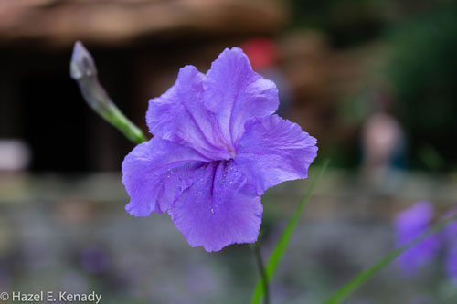

My home is Apopka, Florida.
I’m an aspiring front-end developer who loves everything about the web. I've lived in the Orlando, Florida most of my life. For six-years, I lived in Roswell, NM; I met some strange people, but not any that fall into the category of "alien." I’m excited to bring my life experience to the process of building websites that are a joy to visit, interact with, and navigate .
I’ve been a licensed massage therapist and proposal analyst, and am a life-long learner who's always interested in expanding my skills.
When I'm not working or finishing up my Informatics degree, I enjoy roaming Disney World and taking photos.
I want to master the process of building web sites and increase my knowledge, skills and abilities in:
I’d like to work for a web development firm helping clients create an impressive online presence.
In 2008, I was selected to be in the 3PM parade at Magic Kingdom. Waving during the entire parade is not as glamorous or easy as it looks.
